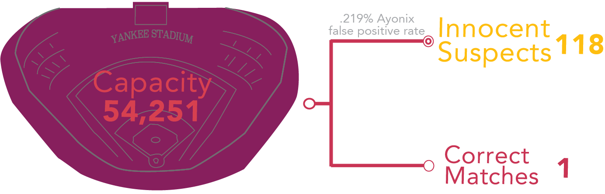

As facial recognition gains prominence with law enforcement, should Americans be asking how much we know about its accuracy and how its being used?
Artificial intelligence algorithms map your face and then converts the map into a mathematical equation that is compared to other faces in the available database. The computer resturns results that appear similar to the photo and gives a confidence score to show the liklihood that each result is accurate.
Often, facial recognition data shown to the public is from "best case scenario" situations, such as high-quality photo comparison, which is often not how the software is actually being used in the field.
False positive rate is the percentage of the time that the algorithm says someone is a match when they are not a match. False positives in a police context create suspects out of innocent people
Let’s pretend there is a crime caught on tape at Yankee stadium. A picture of each person is taken at security as they leave the stadium for police to try to match with the tape. The Ayonix algorithm would place 118 innocent people under suspicion with no evidence, even under ideal photo conditions.
Despite concerns of accuracy, most states allow the state police, FBI, or both to run searches using the state drivers license photo database without a warrant or probable cause
Nearly half of all U.S adults have their photo in at least one database searchable by the FBI without a warrant
117,000,000
This does not include other federal agencies, state police, local police, private security companies, or social media sites
Visualizations: Sarah Lilly
Data: NIST 2019, ACLU, whohasyourface.org, Pew Center 2019